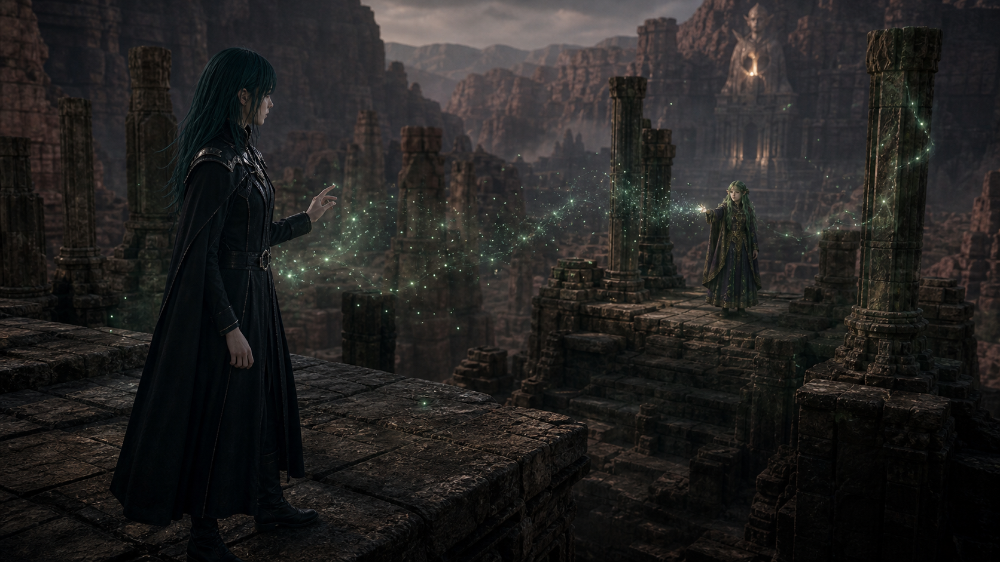
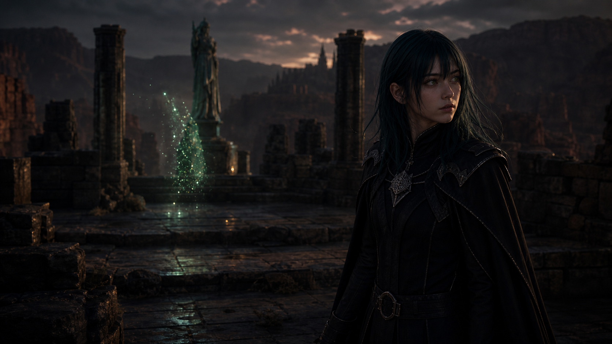

01 · monitor_required
Shot001 · 梦境残响
把上一章的神秘意识延续到本章，并用一个真正的回应动作而不是换光粒暗示 Byleth 的身世不只属于教会。



- Characters
- Byleth, Sothis
- Audio
- Sothis, softly in Japanese: そなたは、また何を聞いたのじゃ？
- Edit
- cut from black / hard cut to morning bell
- Source
- 00:01:30
- Source match
- Sothis dream closeup / matches dream residue beat
- Status
- monitor_required
- Revision
- Run prompt-against-frame QA and a 3-second motion probe. Reject if the dream becomes a flat collage, the hand reach is absent, Sothis becomes an adult glamorous woman, Byleth becomes male, magic only changes brightness, or START/KEY/END collapse into one stare.